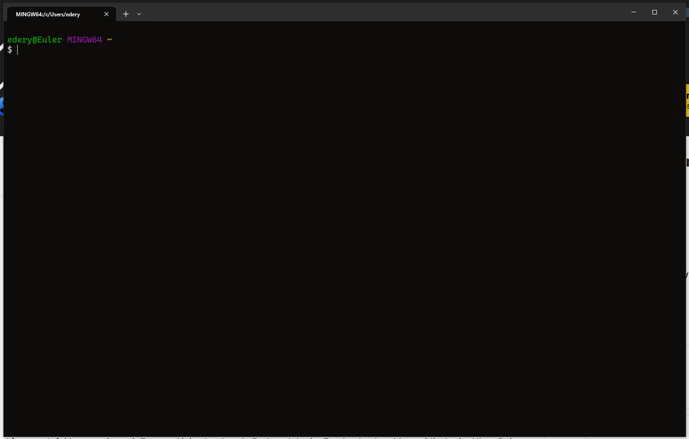
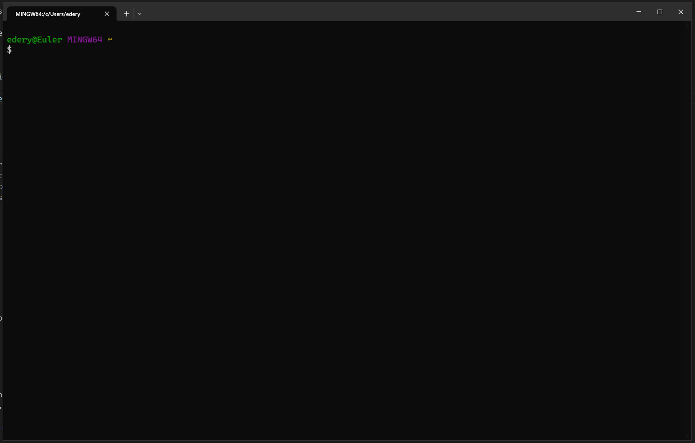
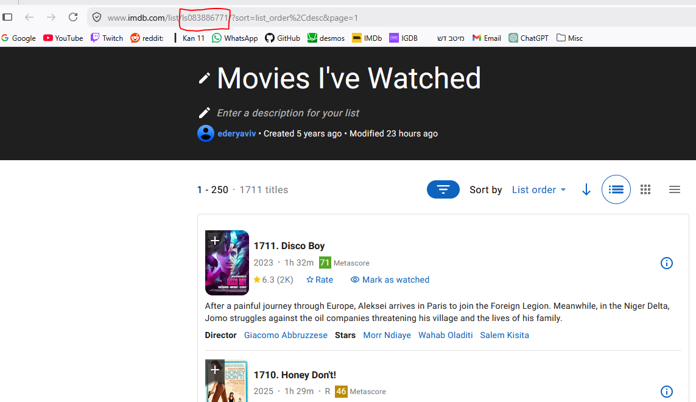

Introduction
FilmFlam (or just “flam”) is a commandline tool and API for extracting insights from your movie lists.
From the commandline, flam enables you to quickly answer questions like “where have I seen this actor?”, or “which director have I seen the most movies from?”, and so much more.
For more powerful uses, you can import flam and use the underlying API to access all the data about the movies and people in your movie lists.


Features
Get information about all the movies in your movie list, or about the people in those movies
Filter those movies or people to find something specific
Sort everything and everyone and discover standouts
Extend flam to support custom movie databases, custom filters, and custom attributes
All in a short and quick commandline
All in a python API for using from a script
Installation
Simply:
pip install film-flam
And you should be good to go!
Basic usage
Warning
This tutorial assumes your list is on IMDb and is public. If that is not the case, read the full list of supported fetchers and pick the one that’s right for you.
The first thing you need to do is let flam know which movie list you want to use. For IMDb lists, it’s easy to find the list ID from the URL on the list page:

So in this case the list ID is 083886771. Let’s configure it:
flam config list watched imdb-listid=083886771
Now flam will know this list by the name “watched”, and it knows that this list can be downloaded using the “fetcher” imdb-listid.
Tip
Fetchers tell flam how to download a list - different fetchers may download from different sites (IMDb, Letterboxd, etc.), or in different ways (the official IMDb API, or some unofficial one, etc.).
Next, assuming your list is configured, we can fetch all its data. Run:
flam fetch watched
This will automatically open your browser and click some buttons to export the IMDb list to CSV, so don’t be alarmed by that. Fetching can be quick or it may take several hours, depending on the size of your list. It’s safe to interrupt this in the middle. Once it’s done, you’re ready to start using flam!
# Browse all movies in the list.
flam find movies watched
# Find directors named "tarantino" including all their movies from the list.
flam find director watched -name tarantino
# Find people from any movie in the list whose average rating across those movies is at least 8.
flam find people watched -avg-rating +8
# Find the tallest actors in the list.
flam find --sort height cast-people watched
# Find movies both written and directed by women.
flam find movies watched -every-role [ writer director ] -gender female
# Find people who share your birthday :)
flam find people watched -birth-month-day 07-25
What’s next
Configure your lists with
--default-fetch=yes,--default-find=yesso you don’t need to type their name every timeRe-run
flam fetchwhenever you want to refresh the database after adding movies to your listFlam supports finding movies, people, or roles. Read all about what they mean
Read about filters for composing more complex queries. Any random question you can think of, flam can answer!*
Read more about how to configure lists and configure flam with all your movie lists!
Read the API docs if you’re interested in using flam from a python script
* Probably :)
Supported platforms
Flam is cross-platform and should work on Windows, Linux, and macOS. However, it’s only well-tested on Windows, since that is what I am using. Please let me know if you encounter issues.
Flam is better if you have less installed. If you’re on Windows, it’s recommended to install it. One easy way is to just install git.
Getting help
If you encounter issues or have questions, you can open a GitHub issue, or email me at ederyaviv2@gmail.com.
Disclaimer
This program uses TMDB and the TMDB APIs but is not endorsed, certified, or otherwise approved by TMDB.
Likewise for IMDb, Letterboxd, or what-have-you.